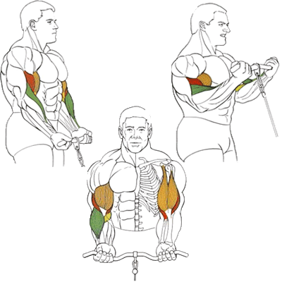

!!!!Cчитается одним из самых эффективных упражнений для наращивания объёма и силы бицепсов.
Исходное положение:
Встать перед тренажером и взять рукоятку нижнего блока обратным хватом.
Техника выполнения:
рукоятка подтягивается к плечам сгибанием рук в локтевых суставах.
возврат в исходное положение
Рекомендации:
При выполнении этого упражнения локти должны быть прижаты к корпусу, чтобы нагрузка приходилась только на бицепс.
Можно поменять рукоятку тренажера на канаты. Взяться за них так, чтобы согнутые пальцы рук были направлены друг на друга.